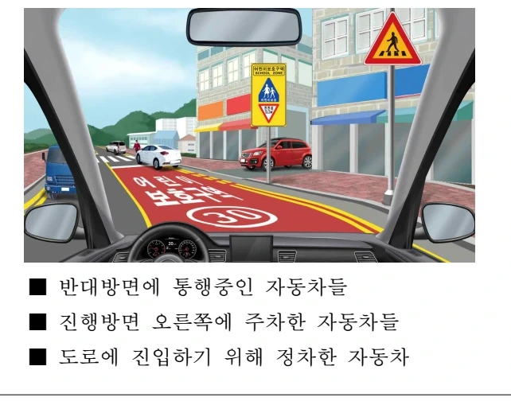

804. 以时速30公里的速度直行。安全的两种驾驶方法是？

- ①以时速30公里的速度通过人行横道，以免与停放的车辆相撞。
- ②驶近时减速，并在人行横道前的停止线停车。
- ③由于人行横道没有人，因此以时速30公里的速度慢行。
- ④由于人行横道没有人，因此照常通过。
- ⑤注意准备从右侧驶入道路的车辆并缓慢行驶。
查看答案
答案
② 驶近时减速，并在人行横道前的停止线停车。
⑤ 注意准备从右侧驶入道路的车辆并缓慢行驶。
依据
事发地点为某住宅区儿童保护区。进入儿童保护区内无红绿灯的人行横道时，无论是否有行人过马路，都必须停车后方可进入。特别是，如果人行横道附近停有汽车，就看不到试图过马路的行人，所以即使你打算停车后缓慢通过，也要做好行人进入的准备。试图从道路以外的地方进入道路的车辆驾驶员必须首先停车，但有些司机强行进入道路。因此，如果看到有车试图从道路以外的地方进入道路，一定要慢行、小心。
依据文字为学习用机器翻译。